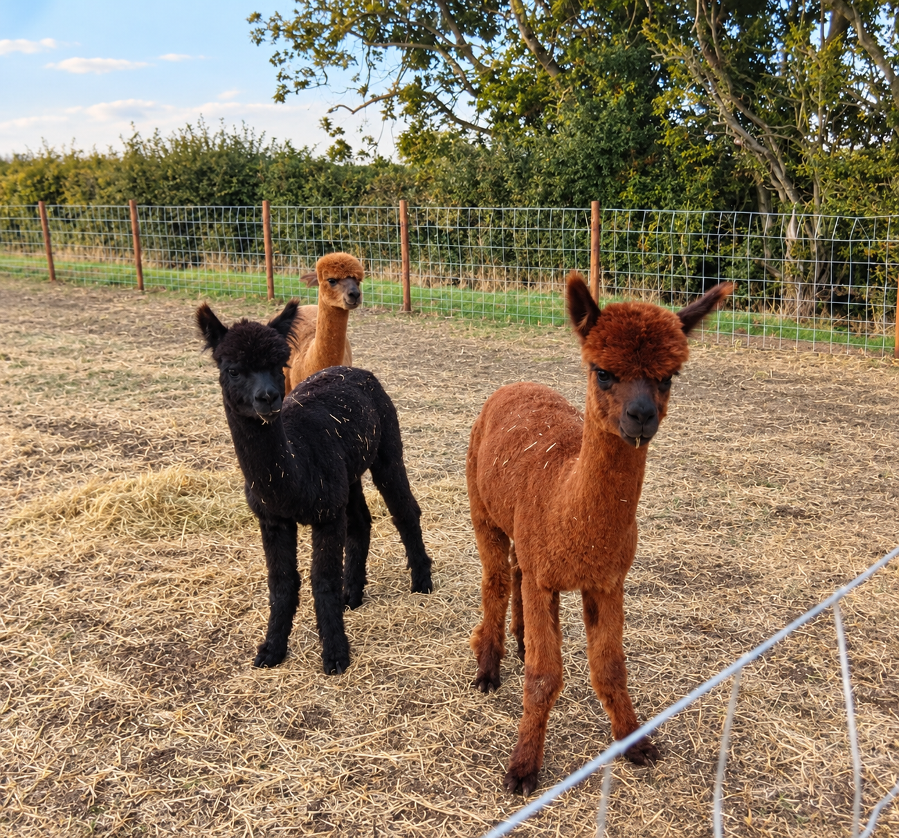

KEEP IT SIMPLE
Grass Tent Pitch
Spacious grass pitches with proper countryside views and no-faff pricing.
- Up to 6 people included
- Dogs, awnings & pup tents included
- Full access to site facilities
From £10 / night
THE CAMP INN · LINCOLNSHIRE
A family-run campsite and smallholding built with nature in mind — somewhere to camp, meet the animals, slow down and make proper memories.
Book your stay →BOOK YOUR STAY
OUR PITCHES
From canvas under the stars to a cosy farm escape.
KEEP IT SIMPLE
Spacious grass pitches with proper countryside views and no-faff pricing.
A LITTLE MORE POWER
Traditional grass camping with the convenience of a 16amp electric hook-up.
EVERYTHING AT YOUR PITCH
A roomy touring pitch with electric, fresh water and grey waste connection.
YOUR OWN FARM ESCAPE
For two, with a log burner, kitchenette, private veranda and unforgettable farm moments.

MORE THAN SOMEWHERE TO PITCH
We’re building the kind of campsite we’d want to arrive at ourselves: relaxed, family-friendly and full of small things that make a stay memorable.
Meet the animals, grab something from the café, sit around the fire and let the kids enjoy being outdoors.
Come and be part of the beginning →Low-impact solar and renewable power.
Careful water use and thoughtful systems.
Practical choices designed to reduce waste.
Protecting the countryside we love.
Opening 28 March 2027 · Lincolnshire
YOUR STAY
This is the working front-end prototype. The next stage will connect live availability, extras and Square payments.